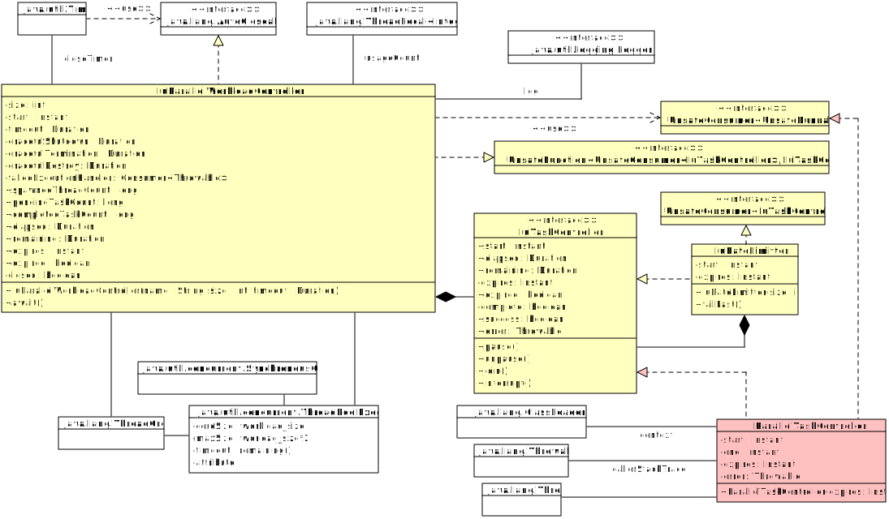

- All Implemented Interfaces:
UnsafeFunction<UnsafeConsumer<IuTaskController>,,IuTaskController> AutoCloseable

Each controller is closeable, timed, and operates in a
dedicated task executor. It's expected for all tasks related to the workload
to complete within the established a given timeout interval,
after which active tasks will be interrupted and related resources will be
torn down.
All tasks should handle exceptions. By default, any
Throwable not handled by task execution notifies an immediate stop to
all work and for the controller to close. The exception that caused the
failure will be thrown as the cause of ExecutionException from
await().
- See Also:
-
Constructor Summary
ConstructorsConstructorDescriptionIuParallelWorkloadController(String name, int size, Duration timeout) Creates a new workload controller. -
Method Summary
Modifier and TypeMethodDescriptionapply(UnsafeConsumer<IuTaskController> task) Submits an asynchronous task for processing.voidawait()Wait until either all pending tasks have completed, or until the controllerexpires.voidclose()Shuts down all activity and releases resources related to the workload.voidInvoked by default if any task throws an exception during execution.longGets a count of tasks completed by this controller.Gets the time elapsed since the controller was created.Gets the instant the timeout interval expires.longGets a count of tasks submitted to this controller that have not yet completed.Gets the time remaining until the controller expires.longGets a count of threads spawned by this controller.booleanisClosed()Determines whether or not this controller is closed.booleanDetermines whether or not the controller has expired.voidsetFailedExecutionHandler(Consumer<Throwable> failedExecutionHandler) Overrides the default execution handler.voidsetGracefulDestroy(Duration gracefulDestroy) Sets the time to wait for the thread pool to shut down, after closing the controller, waiting for worker threads tocomplete gracefully, and interrupting all threads managed by this controller.voidsetGracefulShutdown(Duration gracefulShutdown) Sets the time to wait for worker threads to complete after closing the controller, before shutting down the thread pool.voidsetGracefulTermination(Duration gracefulTermination) Sets the time to wait for the thread pool to shut down, after closing the controller and waiting for worker threads tocomplete gracefully, before interrupting all threads managed by this controller.voidProvides an alternative logger to use for tracing workload events.toString()
-
Constructor Details
-
IuParallelWorkloadController
Creates a new workload controller.- Parameters:
name- descriptive name of the workload, for logging and error reportingsize- maximum number of parallel tasks to execute at the same timetimeout- total time to live for all workload-related tasks
-
-
Method Details
-
setLog
Provides an alternative logger to use for tracing workload events.Uses a class-level delegating default logger until this method provides an alternative.
- Parameters:
log- alternative logger
-
setGracefulShutdown
Sets the time to wait for worker threads to complete after closing the controller, before shutting down the thread pool.- Parameters:
gracefulShutdown-Duration
-
setGracefulTermination
Sets the time to wait for the thread pool to shut down, after closing the controller and waiting for worker threads tocomplete gracefully, before interrupting all threads managed by this controller.- Parameters:
gracefulTermination-Duration
-
setGracefulDestroy
Sets the time to wait for the thread pool to shut down, after closing the controller, waiting for worker threads tocomplete gracefully, and interrupting all threads managed by this controller.After the graceful destroy period has passed, all threads managed by this controller and still running will be abandoned and a
Level.WARNINGwill be logged. This condition indicates a possible resource leak.- Parameters:
gracefulDestroy-Duration
-
setFailedExecutionHandler
Overrides the default execution handler.- Parameters:
failedExecutionHandler- consumer to accept any task execution failures, may calldefaultHandleFailedExecution(Throwable)to inject default behavior.
-
defaultHandleFailedExecution
Invoked by default if any task throws an exception during execution.- Parameters:
cause- task execution error
-
getSpawnedThreadCount
public long getSpawnedThreadCount()Gets a count of threads spawned by this controller.- Returns:
- thread count
-
getPendingTaskCount
public long getPendingTaskCount()Gets a count of tasks submitted to this controller that have not yet completed.- Returns:
- pending task count
-
getCompletedTaskCount
public long getCompletedTaskCount()Gets a count of tasks completed by this controller.- Returns:
- pending task count
-
getElapsed
Gets the time elapsed since the controller was created.- Returns:
- time elapsed
-
getRemaining
Gets the time remaining until the controller expires.- Returns:
- time remaining; may be zero or negative if already
isExpired()
-
getExpires
Gets the instant the timeout interval expires.- Returns:
- instant the timeout interval expires.
-
isExpired
public boolean isExpired()Determines whether or not the controller has expired.Once expired, all threads waiting on the controller will be notified and the controller will be closed. No more tasks may be submitted once the controller has expired; all remaining tasks will be interrupted and/or throw
IllegalStateExceptionwith a message indicating a timeout.- Returns:
- true if the controller is expired; else false
-
await
Wait until either all pending tasks have completed, or until the controllerexpires.- Throws:
ExecutionException- If a task useddefaultHandleFailedExecution(Throwable)to report an execution error. The first error reported will be the cause, and additional errors reported prior to shutdown will be suppressed.InterruptedException- if interrupted waiting for pending tasks to complete. If task execution was interrupted, that condition will be the cause ofExecutionException;InterruptedExceptionthrown directly indicates this thread, not a task thread, was interrupted.TimeoutException- if the controller expires before all pending tasks complete normally. If task times out, that condition will be the cause ofExecutionException;TimeoutExceptionthrown directly indicates this thread, not a task thread, timed out.
-
apply
public IuTaskController apply(UnsafeConsumer<IuTaskController> task) throws InterruptedException, TimeoutException Submits an asynchronous task for processing.This method will block until a thread is available for excuting the task, or until the controller has
expired. Applications should, however, useIuRateLimitteror similar to restrict prevent the need for blocking, and should enforce SLOs on workload runtimes to ensure algorithm scalability can be calculated to approach but not reach the upper limit.To ensure resources are released gracefully and efficiently when the workload timeout expires, both the thread the created the task and the thread executing the task may use
IuTaskControllerto synchronize task execution.- Specified by:
applyin interfaceUnsafeFunction<UnsafeConsumer<IuTaskController>,IuTaskController> - Parameters:
task- task, will be provided aIuTaskControllerfor synchronizing task execution.- Returns:
IuTaskController- Throws:
TimeoutException- if the workload expiration timeout is reached before a worker thread is availableInterruptedException- if the current thread is interrupted before a worker thread picks up the task
-
isClosed
public boolean isClosed()Determines whether or not this controller is closed.- Returns:
- true if closed; false if still available for accepting new tasks
-
close
Shuts down all activity and releases resources related to the workload.This method is invoked from a timer when the controller
expires. No more tasks can be submitted once the controller is closed. Repeat calls to this method have no effect.- Specified by:
closein interfaceAutoCloseable- Throws:
InterruptedExceptionTimeoutException
-
toString
-